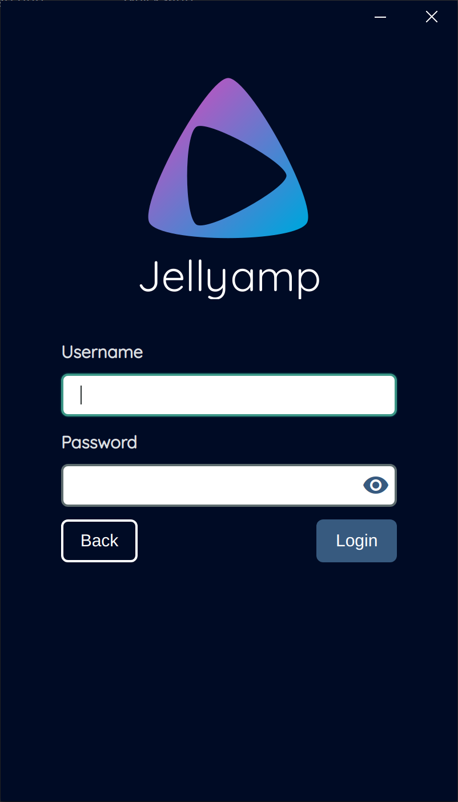
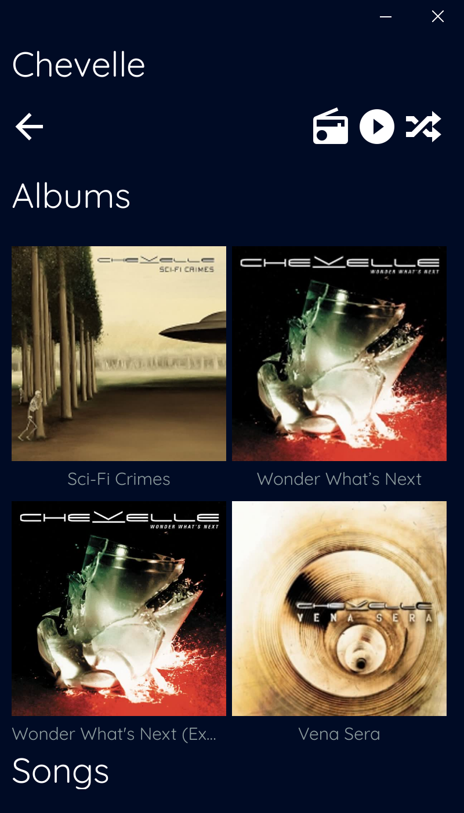
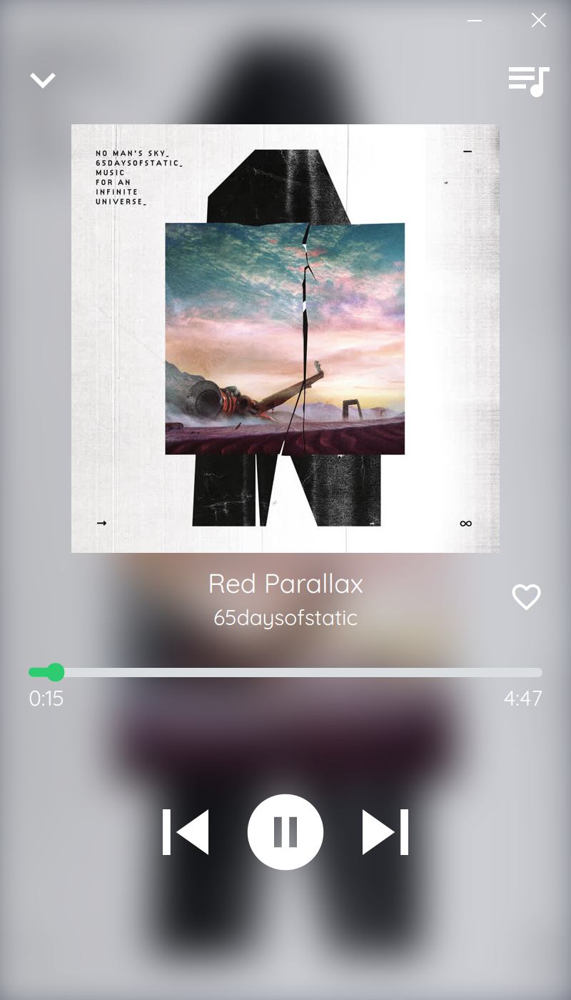

Crecen los clientes de Jellyfin.


El desarrollador de esta app, se resistia a cambiar del servidor Plex a Jellyfin, por la aplicación PlexAmp.
Cuando se publicó Gelli, decidío desarrollar JellyAmp inspirada en PlexAmp.




Este obra está bajo una licencia de Creative Commons Reconocimiento-NoComercial-CompartirIgual 4.0 Internacional.